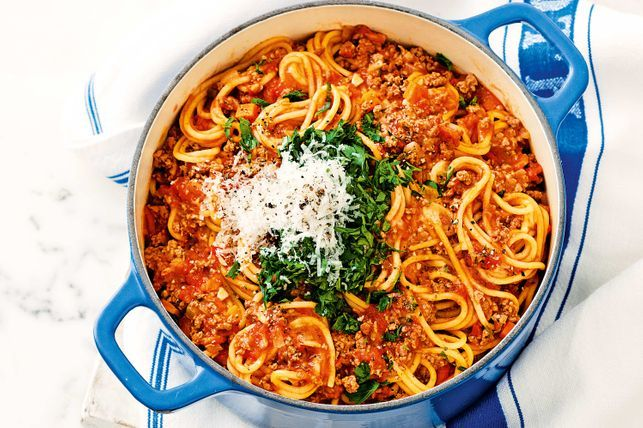

One Pot Spaghetti

How to Make One Pot Spaghetti
One pot spaghetti is a exaclty as a sounds, all the cooking for this delicious dish is cooked in one pot.
If you are tired and hungry then this is the perfect dish to whip up.
Ingredients
- 1 pound of lean ground beef.
- 1 large onion, chopped.
- 2 cloves garlic, minced.
- 1 can petite diced tomatoes.
- 2 cups water.
- 1 tablespoon chili powder.
- 1 teaspoon dried oregano.
- 1 teaspoon of ground black pepper.
- 7 ounces whole wheat spaghetti.
- 1/4 cup grated Parmesan cheese.
Steps
- Heat a Dutch oven over medium heat.
- Cook and stir ground beef, onion and garlic for 5 to 7 minutes.
- Stir in tomato sauce, diced tomatoes, water, chili powder, oregano and black pepper.
- Bring to a boil.
- Cover and reduce heat and let simmer for about 30 minutes.
- Break spaghetti into thirds and add to pot.
- Cover and let simmer until tender.
- Serve with Parmesan cheese.
Return Home